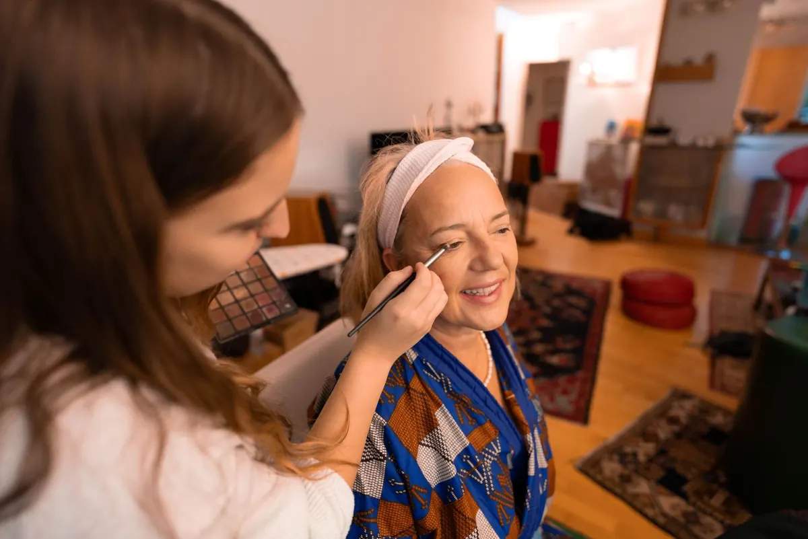
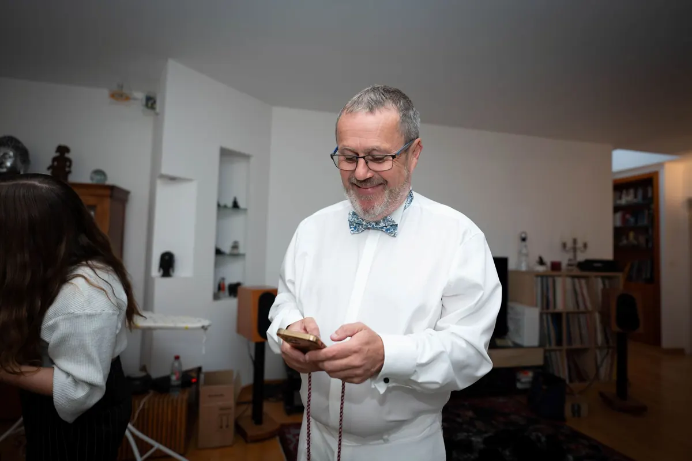
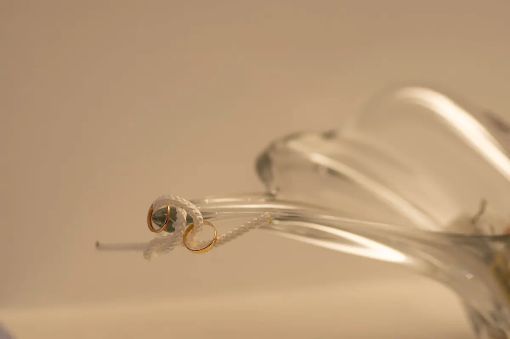
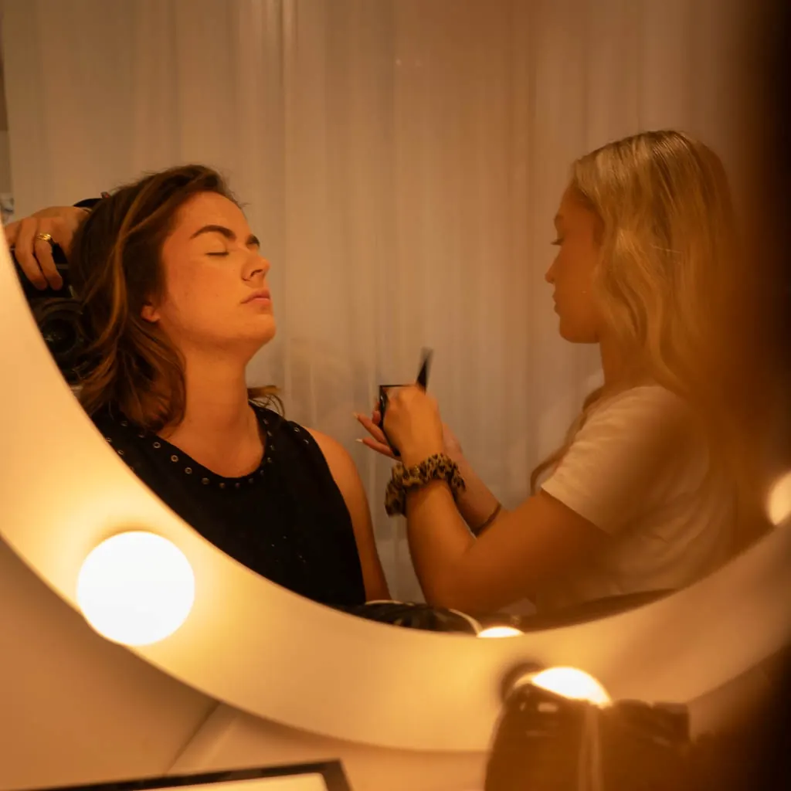
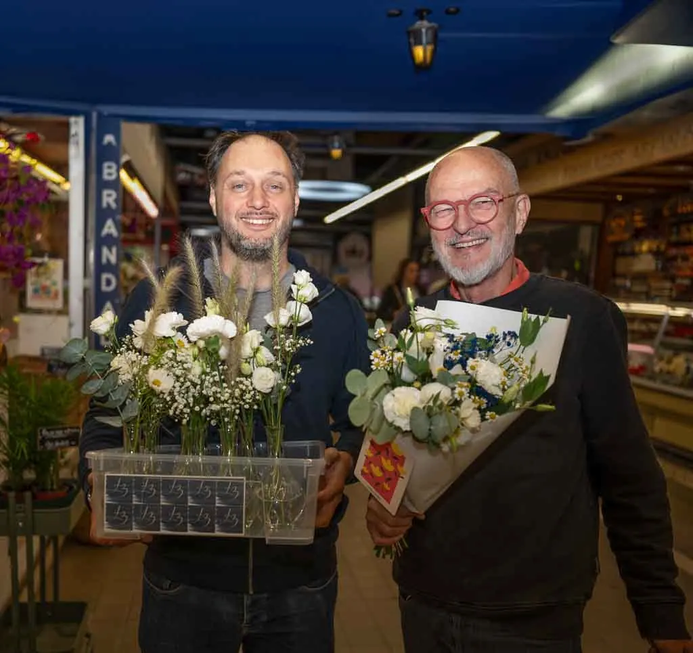
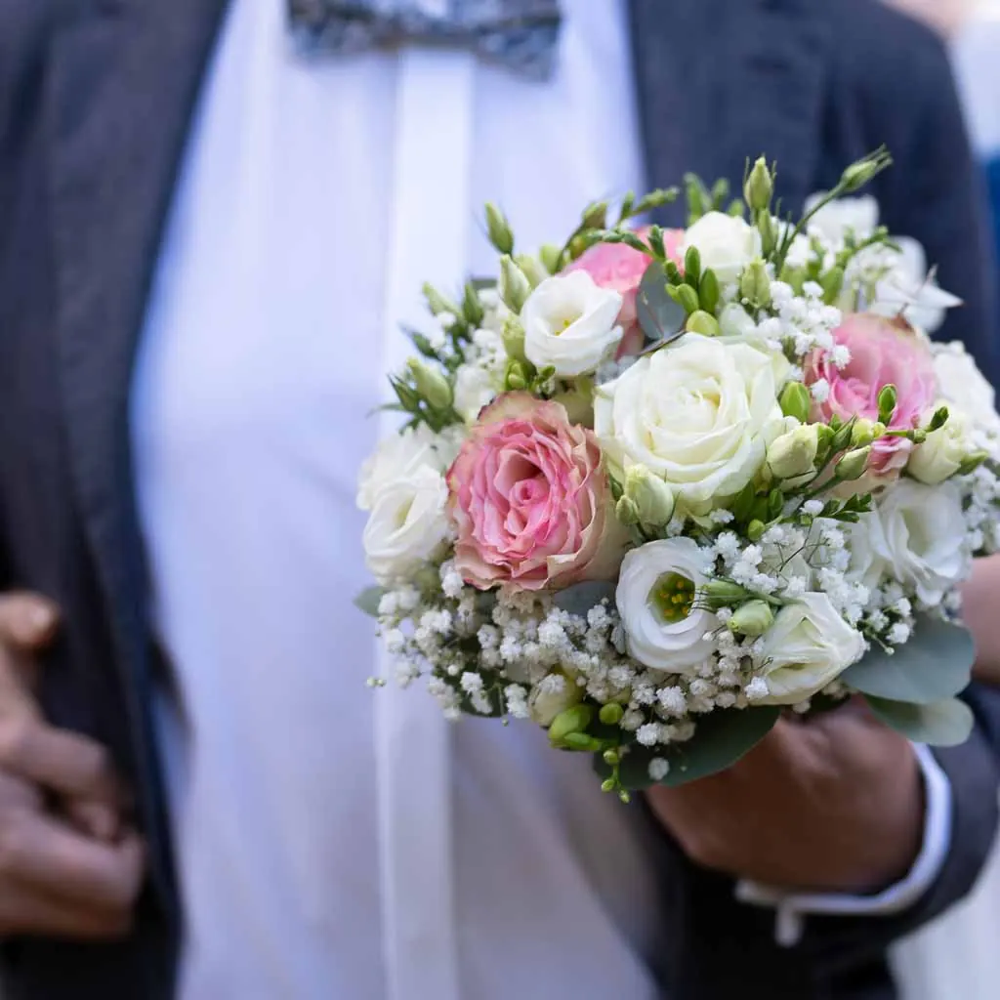
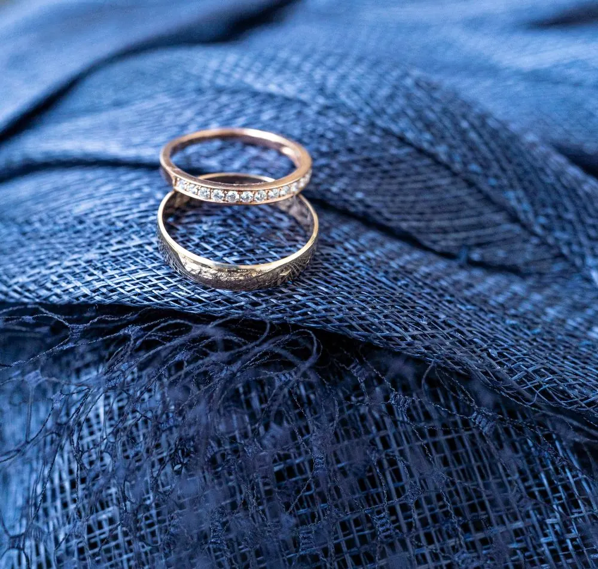
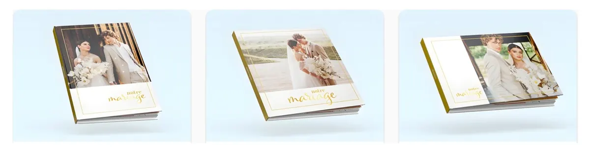

Le journal · Mariage ·
Préparatifs de mariage : pourquoi les photographier – reportage photo à Montpellier
Découvrez pourquoi les préparatifs de mariage sont une étape cruciale pour capturer des moments authentiques et mémorables dans votre reportage photo de mariage.

Dans les préparatifs, il n’y a pas encore le mariage. Mais il y a l’impatience : cette sensation étrange d’être déjà dedans, sans y être tout à fait. À Montpellier comme ailleurs, ce moment se vit souvent dans un lieu familier : une maison, un appartement, un hôtel, parfois un gîte dans l’Hérault. Les préparatifs sont un temps d’attente active. Et cette attente est profondément photographique.



Pourquoi immortaliser les préparatifs de votre union ?
Les préparatifs ne sont pas un simple préalable logistique. C’est l’entre-deux, un temps suspendu. Plus qu'un simple habillage, ils sont le prologue de votre histoire de mariage. Que vous vous prépariez dans un appartement du centre de Montpellier, dans un domaine à Castelnau-le-Lez ou dans un mas au cœur de l’Hérault, ce moment est celui de la metamorphose.
En tant que photographe de mariage, mon rôle est mon rôle est de capter ce qui ne se rejoue pas : les détails discrets, la concentration, les silences, la présence des proches tout. autant que de saisir des détails essentiels : la dentelle de la robe, l'éclat des alliances, et surtout, l'émotion de vos proches (parents, témoins, demoiselles d'honneur).
Il est aussi de mettre en relief cette transition qui apporte de la matière au reportage, par la fébrilité intérieure des acteurs et la concentration qu’elle occasionne. Car l’impatience sous-tendue des futurs mariés est un moteur de réussite invisible de la photographie de mariage.




Les regards avant le grand basculement
Avant les échanges de la cérémonie, il y a les regards des préparatifs. Des regards libres, furtifs, adressés à personne en particulier. Ils racontent le couple avant qu’il soit exposé aux yeux de tous.
La joie attendue… et déjà présente
On parle souvent de la joie comme d’un moment à venir. Mais ici, elle est déjà là : un sourire sans raison, une légèreté soudaine. C’est une joie en devenir, solide et intime.
Est-ce que j’ai vraiment besoin de photos des préparatifs ?
Les photos des préparatifs de mariage sont souvent celles que l’on hésite le plus à inclure, alors qu’elles sont aussi celles qui donnent le plus de profondeur et de cohérence à l’ensemble du reportage photo. La vraie question est : souhaitez-vous que votre reportage commence au début de l’histoire, ou en cours de route ? Les préparatifs servent à poser une base, une atmosphère. Quelques images suffisent à donner du sens à tout ce qui suivra : la cérémonie, la réception et les échanges avec les invités.
La FAQ des préparatifs : Durée, Lieu, Stress supplémentaire
Combien de temps faut-il pour photographier les préparatifs ?
Il n’est pas nécessaire d’y consacrer des heures. Dans la majorité des mariages que je photographie à Montpellier, dans l’Hérault et ailleurs le temps à compter est d’environ :
- 30 à 45 minutes pour capter l’essentiel.
- 1 heure pour un vrai confort, sans alourdir la journée.
L’objectif est de saisir l’ambiance, les transitions et les moments calmes avant l’intensité.
Quels endroits choisir pour les préparatifs ?
Il n’existe pas de lieu parfait, mais certains choix facilitent le shooting : une pièce avec de la lumière naturelle et un espace relativement calme. Que ce soit une maison de famille ou un hôtel, ce qui compte c'est que le cadre soit "habitable" pour vous.
Les préparatifs sont-ils stressants si je n’aime pas être photographié ?
C’est une inquiétude légitime. Mais les préparatifs ne sont pas une séance photo posée. Mon approche est simple : être présente sans envahir, observer plus que diriger. La plupart des couples me disent après coup que ce moment a été plus apaisant qu’ils ne l’imaginaient grâce à cette bienveillance.
De l’écran au papier : prolonger l’émotion des préparatifs

À l’ère du tout-numérique, la finalité d’un reportage de mariage est de vivre entre vos mains. Les photos des préparatifs prennent une tout autre dimension lorsqu'elles sont.
Construire votre patrimoine familial.
Imaginez-vous, dans dix ou vingt ans, ouvrant votre album de mariage avec vos enfants ou vos proches. En tournant les premières pages, vous ne tombez pas directement sur la cérémonie. Vous découvrez d'abord ces moments de calme, les mains de votre maman qui ferment votre robe, l'émotion de votre père dans le salon familial à Montpellier... Ces images posent le contexte. Elles sont le "Il était une fois" de votre livre, le patrimoine que vous transmettrez.
Un objet à votre image, en toute liberté
Parce que ma démarche à l'Atelier Photo Montpellier est de vous accompagner avec justesse, je crois que le souvenir doit être un plaisir accessible. Pour ceux qui souhaitent maîtriser leur budget, des solutions éthiques existent.
J'aime recommander Flexi Livre, car leur philosophie rejoint la mienne : le respect des circuits courts. Choisir un album fabriqué en France, c'est s'assurer que vos souvenirs seront portés par des papiers et des encres de haute qualité, garantissant que l'éclat de vos photos ne s'altérera pas. Vous pouvez être acteurs de votre histoire : une fois vos fichiers haute définition livrés, cette liberté vous permet de comprimer les coûts en composant vous-même votre mise en page sur leur interface. Que vous choisissiez un livre d'art réalisé auprès d’un acteur reconnu dans le monde des albums premiums pour les mariage ou un album conçu par vos soins, l'essentiel est de transformer ces instants en un objet tangible.
EN DÉFINITIVE
Un reportage de mariage se lit comme une histoire. Les préparatifs ne sont pas un bonus, ils sont un temps fondateur. Ils permettent de passer de l’intime au collectif, du calme à l’effervescence, sans rupture.
Prêts à immortaliser chaque émotion de votre grand jour ?
Les dates de la saison des mariages dans l'Hérault se remplissent vite. Pour un reportage qui capture l'essence de votre union avec naturel, je vous propose un premier contact selon ce qui est le plus confortable pour vous :
- À mon studio de photographie à Montpellier, pour découvrir mon univers.
- En appel vidéo (WhatsApp, Meet), où que vous soyez en France.
- Dans le lieu de votre choix autour de Montpellier.